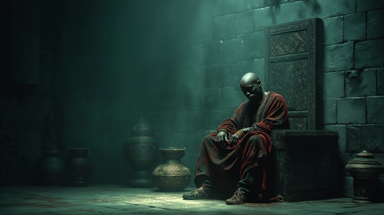

Naa Gbewaa is the legendary founder of the Dagomba kingdom and the spiritual father of the people of Lagadu. In the oral epic Dausi, he is remembered not for bloodshed or conquest, but for wisdom, balance, and his deep connection to the ancestors. His leadership was one of structure and harmony, a vision that transformed a people into a civilization.
Gbewaa was chosen not only by the living, but by the dead who speak through dreams and rituals. He was known for his quiet command, a ruler whose presence inspired reverence rather than fear. His death was not an end, but a transition — and many griots believe that his spirit never left Lagadu, that his breath still lingers in the roots of trees, in the chants of women, and in the drums of kings.
This song honors his eternal presence — the soul that gave Lagadu its voice, and whose legacy no fire, sword, or storm has erased.
The Song of Naa Gbewaa
In stillness he spoke, not with sound, but with gaze,
A king made of silence, of stars and of days.
He walked where the roots and the heavens entwined,
And planted a kingdom with heart and with mind.
No war could forge what he became—
The crown bent gently to his name.
O Gbewaa, father of flame,
Stone of the earth, wind without shame.
The walls you built still echo strong,
Your silence sings in griot song.
He needed no thunder, no blade on his side,
His justice was rhythm, his wisdom a tide.
The children still whisper his name in the dusk,
In tales wrapped in fire, in lore filled with trust.
His throne was carved from spirit's breath,
A king who ruled both life and death.
O Gbewaa, father of flame,
Stone of the earth, wind without shame.
The walls you built still echo strong,
Your silence sings in griot song.
He passed with no scream, no last decree,
Just stars aligning quietly.
But even now the roots still speak,
Of Gbewaa’s hands and Gbewaa’s peak.
Where kings now kneel and gods once stood,
He laid the law in flesh and wood.
O Gbewaa, father of flame,
Stone of the earth, wind without shame.
The walls you built still echo strong,
Your silence sings in griot song.
No tomb could hold him, no grave recall,
The one who heard the ancestors’ call.
He walks still in shadowed sun,
Where every story has begun.
So sing his name, let voices rise,
As wide as stars, as deep as skies.
For kings may fall and empires bend—
But Gbewaa’s song will never end.